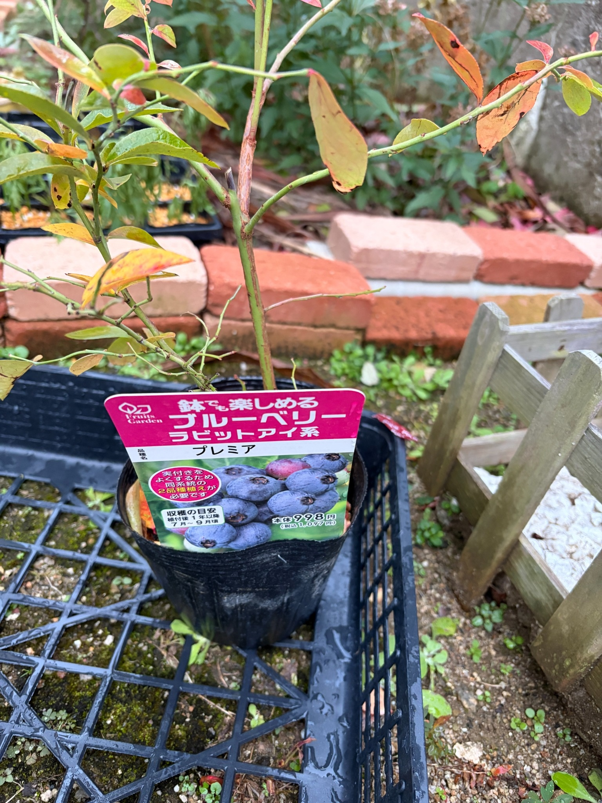

2025/12/13 ラビットアイ系ブルーベリー「プレミア」を購入。植え付け前の姿から記録を始めます
ラビットアイ系ブルーベリーの「クライマックス」「プレミア」「メンデイト」の3品種を購入してきました。今回は、そのうちの一つ「プレミア」の記録です。
写真は、まだ黒い育苗ポットに入った植え付け前の姿です。プレミアはこれから庭に地植えして育てる予定ですが、まずは迎えた日の葉の色や枝ぶりを残しておきます。
苗には緑色や黄緑色の葉がある一方で、黄色や橙色、赤みを帯びた葉も残っています。葉が少なく枝の形がよく見えるところもあり、これから育てていく株の骨組みを眺めることができます。
今は花や実を楽しむ前の段階です。ラベルのブルーベリーの写真を見ながら、いつか自分の庭でも収穫できたらと思いつつ、この小さなポットの姿を出発点にして、プレミアの生育を記録していきます。
クライマックス・メンデイトとともに迎えました
今回購入したのは、クライマックス、プレミア、メンデイトの3品種です。同じブルーベリーでも、品種の違う苗をそろえて育て始めることにしました。
購入するときに考えたのは、実付きのことです。一本の木を眺める楽しみに加えて、異なる品種を一緒に育てることで、花が咲いた後の実付きにもつながってほしいと思っています。
プレミアのラベルにも、実付きをよくするためには、同じ系統の2品種を植える必要があると書かれています。今回は3品種ともラビットアイ系でそろえました。
ただ、品種をそろえただけで、これからの実付きが決まるわけではありません。わが家の庭でそれぞれがいつ花を咲かせ、花の時期がどのくらい重なるのかを、実際に育てながら見ていきたいと思います。
まずは一株ずつの生育を見守り、そのうえで、3品種を一緒に育てることで見えてくる違いも楽しみにしています。
プレミアの名前が入ったラベルと、これからの楽しみ
ポットの前には、赤紫色の大きなラベルがついています。「ブルーベリー」「ラビットアイ系」、そして品種名の「プレミア」がはっきり書かれています。
ラベルには青く色づいた果実の写真もあり、苗を迎えたときの期待が膨らみます。今、目の前にあるのは枝と葉の姿ですが、ここから花が咲き、実がつき、色づいていくところまで見られたらうれしいです。
ラベルにある果実は、もちろんこの苗で収穫した実ではありません。わが家のプレミアがどんな実をつけるのか、大きさや味、収穫できる時期を確かめるのは、これからになります。
収穫の目安には「植付後1年以降」「7月～9月頃」とあります。これは苗についている案内として受け止め、庭で育てたときにはどうなるのかを楽しみにしておきます。
実がついたときには、青くなった姿だけでなく、小さな実が膨らんでいく途中の様子も残しておきたいです。購入時のラベルを眺めている今の気持ちと、実際に収穫するときの気持ちを、いつか振り返れたらと思います。
まずは黒い育苗ポットに入った姿から
プレミアは、黒い育苗ポットに入っています。写真では、ポットを置いた黒い格子状の台が見え、その後ろには庭のレンガがあります。
これから地植えする予定の苗ですが、この日はまだポットのままです。庭に植わった姿ではなく、購入して迎えたときの姿として残しておきます。
ポットの中から立ち上がった枝は、鉢の幅を越えて左右へ伸びています。写真の上側にも枝が続いているため、苗の高さ全体は写っていませんが、中央の枝と横へ伸びる枝のつながりは見えています。
小さなポットに収まっている根と、その上に広がる枝葉。この苗を庭へ植えた後に、どの方向へ枝が伸び、どんな姿になっていくのかが楽しみです。
ただ、写真から根の状態までは分かりません。葉や枝の姿を見ながら、今はまず、植え付け前の苗として迎えたことを記録しておきます。
緑色から黄色、橙色まで、葉の色に違いがあります
購入時のプレミアには、緑色を残した葉があります。左側には比較的緑のはっきりした葉が見え、その周りには黄緑色や黄色の葉が混じっています。
一方、右上の枝には、橙色や赤褐色に見える葉が残っています。中央付近には、黄緑色の面に赤みを帯びた縁がある葉もあり、一枚の中でも色が違います。
株全体が同じ色にそろっているわけではありません。緑を残す葉と、黄色や赤みの目立つ葉が、枝のあちらこちらについています。
特に左下寄りの葉は、黄色の中に赤い色が混じり、細長い葉の形に沿って色の違いが見えます。実を楽しみに購入した苗ですが、冬の入り口の葉にも、思っていた以上にいろいろな色があります。
同じ日に迎えたクライマックスにも赤みのある葉が残っていますが、プレミアにはプレミアの色の混じり方があります。撮影した範囲や光の当たり方も違うので、どちらの色づきが早いとは決めず、それぞれの株の最初の姿として見ていきたいと思います。

葉の斑点や傷みも、購入時の状態として残します
葉を近くで見ると、黒褐色の斑点や、穴の開いた部分が見えます。右上の橙色の葉には暗い色の部分があり、葉先や縁が傷んで見えるところもあります。
黄色い葉の中にも黒っぽい点があり、残っている葉がすべて傷みのない状態というわけではありません。葉によって、色だけでなく表面の様子にも違いがあります。
こうした部分を見ると気にはなりますが、写真だけで病気や虫、乾燥など、どれか一つを原因に決めることはできません。冬に向かう時期の色の変化と、部分的な傷みが重なって見えている可能性も考えながら、今の姿を残しておきます。
これから庭へ植える苗なので、今見えている斑点や葉先の傷みは、植え付け前からあるものです。後で変化を振り返るときにも、迎えた時点ですでにどんな葉がついていたのかが分かるようにしておきたいと思います。
葉が残っていることだけで元気だと決めたり、傷んだ葉があることだけで株全体が弱っていると決めたりせず、枝や芽の様子も合わせて見ていきたいです。
中央から上へ伸びる枝と、左右へ分かれる枝
苗の中央には、上へ向かって伸びる枝があります。その途中から左右へ枝が分かれ、細い枝が横へ広がっています。
中央の枝は緑色を残しながら、一部に赤褐色の部分があります。右へ伸びる枝には緑色が目立ち、枝ごとに色や太さの違いが見えます。
左側には細かな枝分かれがあり、葉のついているところと、葉のない細い枝が重なっています。葉が少ない部分では、どこから枝が分かれているのか、枝先がどちらへ向いているのかをたどりやすくなっています。
今の姿を見ると、上へ伸びる部分と、横へ広がる部分の両方があります。これから地植えした後に、上方向の伸びが目立ってくるのか、横へ広がる枝が増えるのか、株の形の変化にも関心が向きます。
ただ、今見えている枝ぶりは、購入時点ですでにできているものです。わが家へ来てから伸びた枝ではありません。この形を最初の状態として残しておき、育て始めてからの変化と比べていきます。
葉の少ない部分から、枝の形を眺めます
写真には、葉が続いてついているところと、葉のない枝先が見えるところがあります。そのため、葉の色だけでなく、枝の輪郭にも目が向きます。
葉がない部分については、いつ、どのくらい葉が落ちたのかは分かりません。購入前の様子を見ていたわけではないので、葉が減った量や速さまでは記録できません。
それでも、購入時にこうした枝の姿だったことは残しておけます。春に葉が広がったときには、今は見えている枝が葉に隠れ、印象が変わるかもしれません。
果実や花がない時期でも、枝の分かれ方や残っている葉を眺めると、その株の姿が少しずつ分かります。大きさだけを気にするのではなく、枝の形も含めて、生育を見ていきたいと思います。
地植えして育てる、これからのプレミア
プレミアは、庭に地植えして育てる予定です。今はまだポットの中ですが、植え付けた後には、周りの植物や地面とつながる庭の一株になります。
クライマックスとともに地植えで育てながら、同じ庭の中でそれぞれがどんな姿になるのかを見ていきたいと思います。メンデイトも含めた3品種で、葉の広がり方や花の時期に違いがあるのかも楽しみです。
同じ日に迎えた苗でも、枝の形や葉の色はまったく同じではありません。これからの生育にも違いが出てくるかもしれませんが、すぐに品種だけの違いと決めつけず、一株ずつの様子を残していきたいです。
地植えしたら、それだけですぐに大きくなるわけではないと思います。まずは植え付け、その後の葉や枝、芽の動きを順に見ながら、この場所で育っていく姿を追っていきます。
今は、これから庭で育てる楽しみが始まったところです。花や実への期待とともに、苗を迎えた日の控えめな姿も大切に残しておきます。
プレミアの生育記録を、ここから始めます
クライマックス、プレミア、メンデイトの3品種がそろい、庭でブルーベリーを育てる楽しみが増えました。
プレミアには、緑色や黄色、橙色、赤みを帯びた葉が残り、中央から上や横へ枝が伸びています。葉の斑点や傷みもありますが、それらを含めて、購入した日の姿です。
これから植え付けた後に、どのように季節を越し、どんな葉を広げ、花を咲かせるのか。ラベルの果実の写真を眺めている今から、実際に自分で育てた実を見る日へと、記録をつないでいけたらと思います。
収穫だけを待つのではなく、その途中にある枝葉の変化も楽しみながら育てていきたいです。
2025年12月13日。黒い育苗ポットに入ったプレミアを迎え、わが家での生育記録を始めます。